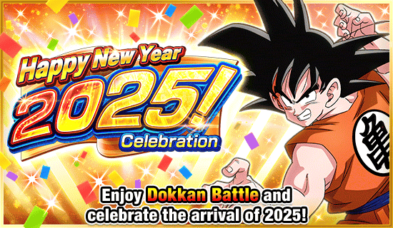
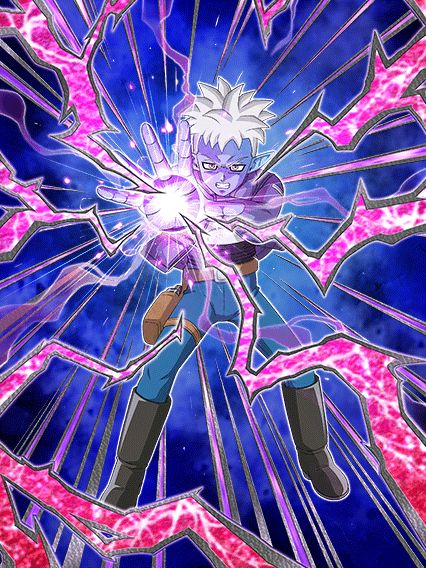
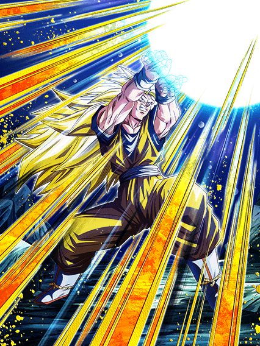

Celebração de Ano Novo

Daima pra fechar o ano com chave de ouro.
Acho que é óbvio o suficiente o quão bom esse ano foi pro Dokkan.
^
Goku Mini SSJ
 (DAIMA)")
No primeiro turno desse cara o dano dele é podre, mas ele tem 90% de chance de desvio e 50% de redução de dano
Depois disso a redução cai pra 30% e o desvio pra 70% nos slots 1 e 2, o que ainda é bom
Depois de desviar 5 vezes o dano dele fica ridículo de absurdo, ele fica Super Efetivo e pode usar a Active dele que dá ainda mais dano
E pra completar, ele dá 41% de ATK pra todos aliados por 2 turnos no SA... pq sim, suporte é bom.
Junta isso com as animações insanas e você tem um Dokkan Fest incrível.
G O L I R O

Quem deixou o cara com 1 única luta ser o melhor TUR?
Esse cara é outro líder pra Demonic Power, e um suporte ridículo de forte, dando 50% de ATK e DEF por 3 turnos só por estar no slot 3
Ele também tem 50% de chance de desvio, juntamente com uma quantidade ridícula de adicionais com chance de serem SAs, e cada SA aumenta a chance de desvio no turno até chegar a 80%
Mesmo se ele não tivesse o desvio, o dano dele é absurdo e a defesa nem se fala, peak.
O EZA DO GOKU SSJ2/SSJ3 PHY

Eu ainda amo demais esse card.
O Goku agora tem +200% de DEF e Defesa Ativa se estiver acima de 77% de HP, o que torna ele super competente defensivamente mesmo que você não consiga se transformar em SSJ3, o que já é mais que o suficiente.

Bro tem todas as habilidades do jogo 💀
O Goku tem um dano ridículo de absurdo, 70% de chance de crítico, defesa insana, potencial de lançar até 4 Supers.. e ainda mais
Agora ele builda 5% de chance de desvio e redução de dano por SA feito e por turno passado, chegando no total máximo de 50% pra ambos desvio e redução, o tornando extremamente forte e útil, independente de quantos Supers você fizer.
O EZA DO KID BUU STR
")
Ele finalmente tem um time, um parceiro de Link e um EZA.
O Buu tem +100% de DEF e um total de 70% de redução de dano nos primeiros 6 ataques que levar (que é a condição pra usar a Active dele)
Além disso, ele agora tem +120% de ATK e DEF e um total de 50% de redução de dano se tiverem 3 aliados Majin Buu Saga ou Majin Power no time
Além do dano absurdo, ele é quase uma parede invencível que ainda se cura e pode nulificar Supers desarmados, facilmente um dos top 3 TURs
E bem merecido..
Você chegou ao fim dessa página!
Obrigado por ler tudo, e fica a vontade pra ver outras